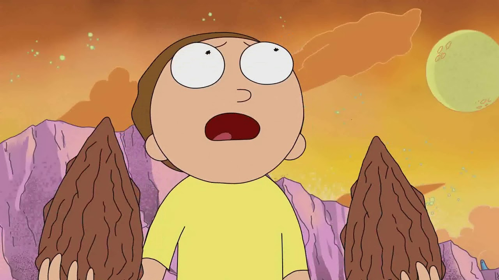

- Animés

- Dessins Animés
- Films d'animation
- A vous de jouer
Rick et Morty (Rick and Morty) est une série d'animation pour adultes américaine créée par Justin Roiland et Dan Harmon, diffusée depuis le 2 décembre 2013 sur Cartoon Network, dans la tranche fin de soirée Adult Swim. La série suit les mésaventures de Rick Sanchez, un scientifique cynique et fantasque, et de son petit-fils, Morty Smith, perturbé et facilement influençable, qui partagent leur temps entre une vie domestique et des aventures interdimensionnelles. Roiland double les personnages principaux, tandis que Chris Parnell, Spencer Grammer et Sarah Chalke prêtent leur voix au reste de la famille.
La série provient d'une courte parodie animée reposant sur la trilogie de films Retour vers le futur, titrée The Real Animated Adventures of Doc and Mharti, créée par Roiland pour Channel 101, un festival de court métrage cofondé par Harmon. Lorsque Adult Swim approche Harmon pour des idées d'émissions de télévision, lui et Roiland décident de développer un programme basé sur ce court métrage.
Le programme est très bien reçu par la critique pour son originalité, sa créativité et son humour.
En 2018 lui est decerné le Creative Arts Emmy Awards : meilleur programme animé pour l'épisode Rick-ornichon de la saison 3.
Rick Sanchez est un vieux scientifique alcoolique au caractère imprévisible et exubérant qui passe son temps à entraîner son petit-fils Morty dans des aventures folles et dangereuses se déroulant dans des mondes parallèles. Cela lui occasionne un certain nombre de problèmes familiaux, les parents de Morty désapprouvant la mauvaise influence de Rick sur son petit fils. Il faut dire que ce dernier est assez naïf (voire un peu benêt) et qu'il est particulièrement peureux. Imaginez donc sa réaction lorsqu'il se retrouve face à des monstres terrifiants lors des expéditions qu'il fait avec son grand-père !
Véritable génie scientifique alcoolique, vulgaire, cynique et misanthrope. Il est l'incarnation de la science irresponsable ; d'une très grande intelligence et pouvant réaliser n'importe quelle invention, il peut être parfois un criminel ne répugnant à rien et outrepassant toute morale. Rick est souvent source d'inquiétude pour Beth, sa fille, quand il passe beaucoup de temps avec Morty, qu'il emploie dangereusement et tente souvent d'impressionner. Bien qu'il semble ne pas avoir de sentiments humains ou de morale, il lui arrive parfois d'avoir des moments de tendresse, notamment avec Morty, qu'il aime malgré tout sans pour autant l'avouer.
C'est le petit-fils de Rick de 14 ans. Plein de bonnes intentions, timide et soucieux de faire le bien, il est trop souvent emporté dans les aventures de Rick. Adolescent constamment ridiculisé par Rick, il l'aime pourtant énormément malgré l'antipathie que ce dernier peut avoir à son égard. Si Morty voue une grande admiration à son grand-père de par les mondes qu'il lui fait découvrir, cherchant souvent à lui faire plaisir et à créer des liens avec lui, il lui arrive d'avoir les nerfs qui lâchent et de ne plus être capable de le supporter. Bien qu'il soit perçu comme un adolescent peu intelligent au début de la série, Morty se révèle souvent très vif d'esprit et est d'une grande aide pour Rick.
Fille de Rick, mère de Morty et épouse de Jerry. Elle est chirurgienne cardiaque pour chevaux et, à l'instar de son père, elle aime l'alcool (notamment le vin rouge). En dépit d'un caractère autoritaire, elle remet régulièrement en question ses choix de vie et sa façon d'élever ses deux enfants, pour qui elle ne montre pourtant pas réellement d'attention. Bien qu'elle semble la plus réfléchie de la famille Smith, il lui arrive souvent d'avoir un comportement irresponsable, notamment lors de la saison 3. Les détails du passé de Beth ne sont pas vraiment connus. Elle s'est décrit comme une jeune fille enthousiaste de Muskegon, Michigan, élevée par une mère très ordinaire après que son père les a abandonnées à une période inconnue pour des raisons inconnues. Au lycée, elle rêvait d'être chirurgien cardiaque, mais à 17 ans, elle est allée au bal de promo du lycée avec Jerry Smith et est tombée enceinte de Summer. Malgré cela, Beth a étudié à l'université pour réaliser son rêve. Beth a admis qu'elle avait pensé à avorter de Summer.
Jerry est l'époux de Beth Smith , le père de Summer Smith et Morty Smith, et le gendre de Rick Sanchez. La première moitié de la saison 1 comprenait principalement Jerry C-137, tandis que l'actuel Jerry est né et habite la dimension de remplacement. Le mariage de Jerry avec Beth est souvent difficile, et il a passé la majeure partie de la saison 3 à vivre dans un appartement séparé en tant que célibataire jusqu'à ce que lui et Beth se réconcilient. Jerry est peureux et considéré comme un idiot par sa famille il est peu sûr de lui et a une relation contradictoire avec son beau-père, Rick. Il rivalise souvent avec Rick pour l'admiration de sa famille et il désapprouve fortement l'influence que ce dernier a sur son fils. On lui reproche très souvent le fait qu'il soit chômeur.

La sœur de Morty, superficielle et obsédée par son image auprès de ses camarades. Summer est la lycéenne américaine typique. Elle voudrait être populaire et considère que sa famille est dysfonctionnelle. Elle est toujours absorbée par son téléphone et les réseaux sociaux, à filmer son chien quand il devient super-intelligent, et tremble à l'idée que son père se crée un compte Facebook. Elle aime se servir des inventions de son grand père pour favoriser sa vie sociale. Rick la considère comme une compagne alternative d'aventures, mais son sexisme l'empêche de la reconnaître totalement comme elle le voudrait.
Condorman : C'est un ami de longue date de Rick. Mi-homme mi-oiseau, il vit sur la planète Squanch, à 6 000 années-lumière de la Terre. Lors de son mariage avec Tammy (une amie de Summer), on découvre que cette dernière est un agent fédéral chargée de traquer Condorman, Rick et tous leurs amis criminels. Elle lui tire plusieurs fois dessus lors de la fusillade qui suit. Il est finalement ressuscité par le gouvernement galactique sous forme de cyborg : Phénixman Squanchy : Un des meilleurs amis de Rick. C'est un chat jaune et anthropomorphe ayant la capacité de devenir des centaines de fois plus fort en cas de besoin. Sa passion est la masturbation par asphyxie érotique ; il utilise souvent le terme "Squanch" pour tout et n'importe quoi, à la manière des Schtroumpfs.
Jessica : est une camarade de classe dont Morty est amoureux.
Mr Goldenfold : Professeur de mathématiques farfelu de Morty. Il a une multitude de pulsions sexuelles refoulées depuis que sa femme l'a quitté.
Gene Vagin : Directeur de l'école de Morty. Il affirme pour sa défense que son nom à consonance ridicule est d'origine scandinave.
Evil Morty : Ce Morty d'une réalité parallèle se ramène à beaucoup de suppositions auprès de lui, on comprend par la suite qu'il veut se venger de Rick.
Terry Effrayant : Une parodie de Freddy Krueger. C'est un personnage de rêve qui finit par aider Rick et Morty en se levant pour Morty contre son tyran enseignant.
 Dragon Ball Z
Dragon Ball Z Là-haut
Là-haut Mulan
Mulan